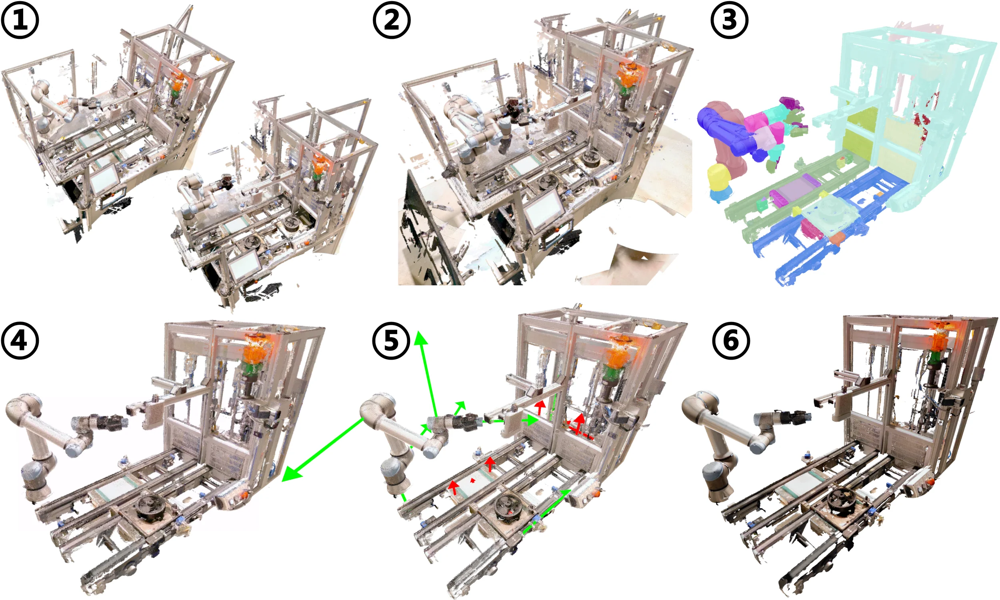
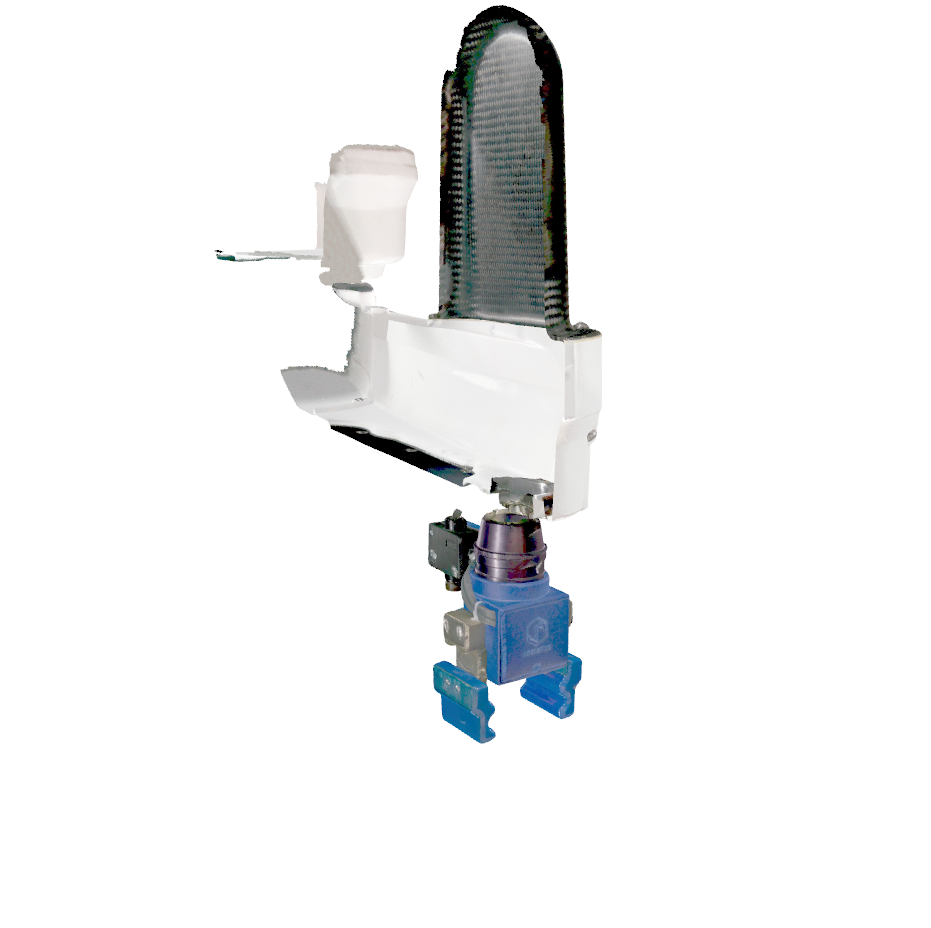
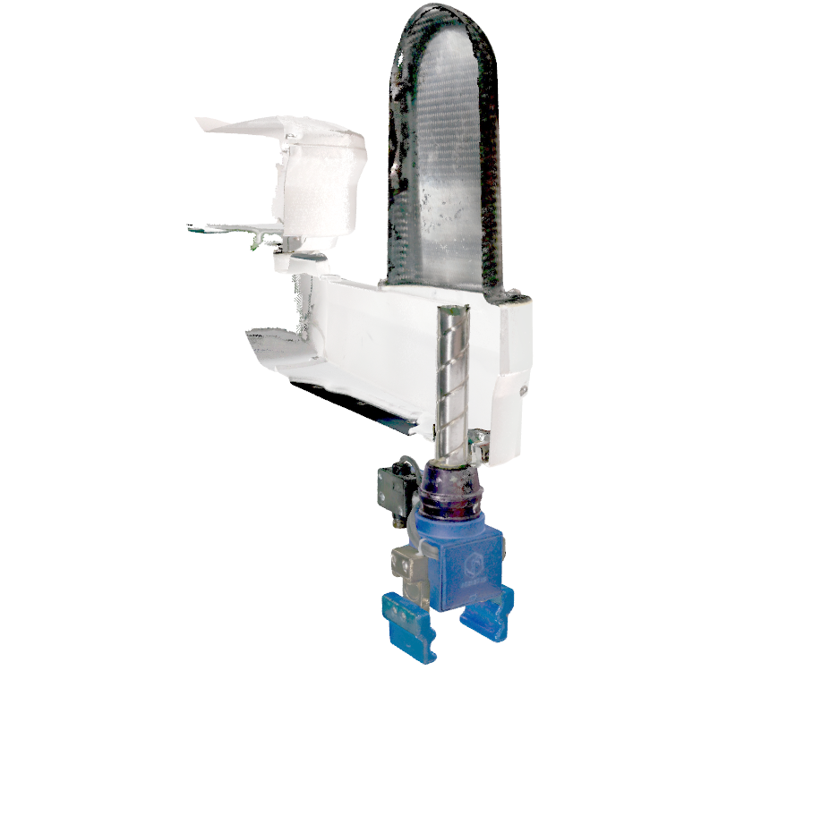
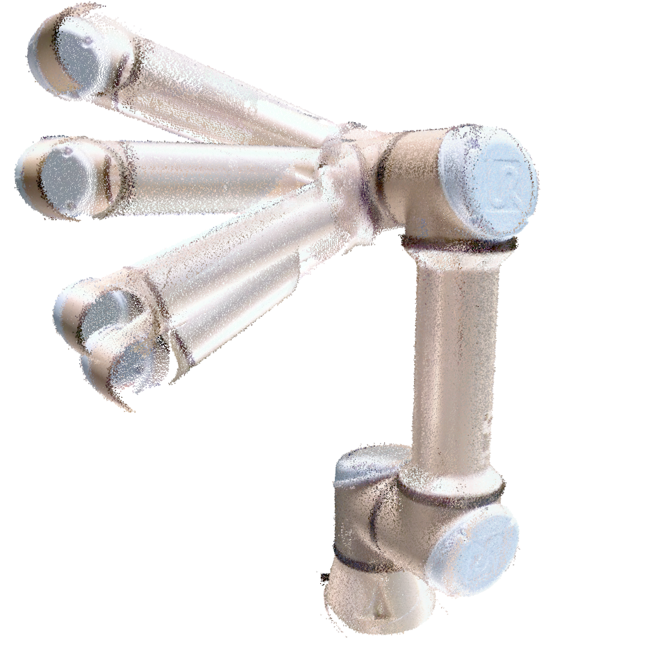
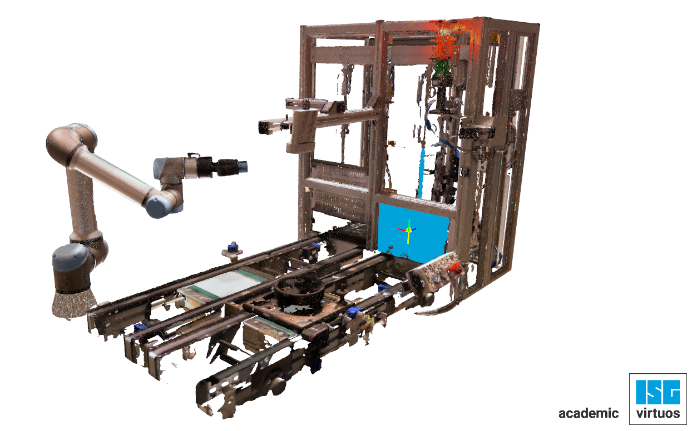
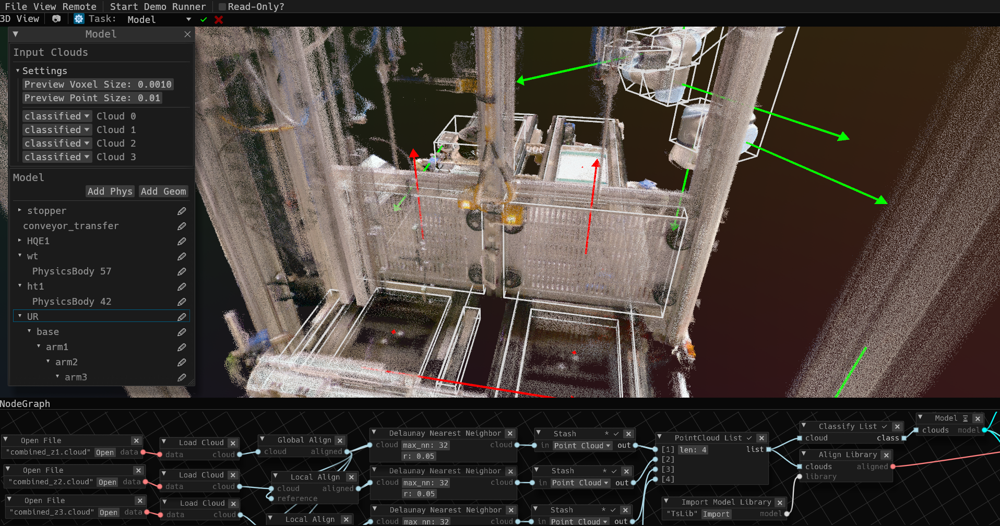

Overview
Virtual commissioning cuts planning effort, commissioning time and project cost, but only if there is a digital twin that matches the plant as built. Around 80% of production plants are brownfield, and their CAD models are incomplete, out of date or missing altogether.
A laser scanner can capture such a plant to millimetre accuracy within an hour or two. A point cloud, however, contains only geometry: it has no part boundaries, no component identities and no kinematics. Industrial scenes are also cluttered and heavily occluded, and moving parts mean that no single scan sees everything.
We present an interactive workflow that merges several static scans of a plant, each taken in a different kinematic state, into an articulated digital twin. Rather than aiming for full automation, it keeps a human in the loop where the data is ambiguous and automates the geometric reasoning that is reliable. Every stage can be checked, so the operator can guarantee the quality that downstream simulation needs.
The workflow
The input is a set of raw scans showing the plant in different static states. A sequence of interactive steps combines them into one model that encodes part geometry, joint axes and the kinematic hierarchy.

- 01Preprocess. Statistical outlier removal suppresses the noise that reflective and transparent surfaces cause, and interactive cropping removes the parts of the 360° scans that don't belong to the plant.
- 02Register. Scans, including detailed handheld scans of single components, are brought into a common frame. From three or more point correspondences, the Kabsch algorithm gives a closed-form alignment, which ICP then refines.
- 03Segment. Moving parts are isolated with box, polygon, sphere, DBSCAN-cluster and planar-region selections. These selections can be combined with union, intersection and difference, and organised into a hierarchy.
- 04Match. Each part is registered across all scan states, and the observations are merged into one point cloud. Matching follows the kinematic chain from the base outward.
- 05Estimate axes. From the relative rigid motions of each part, we fit a revolute axis (direction and centre) and a residual prismatic axis using closed-form eigen-decompositions. Joint limits come from the extreme observed states.
- 06Reconstruct & export. Screened Poisson reconstruction turns each part into a mesh, and oriented bounding boxes serve as lightweight collision proxies. The kinematic tree is then exported to URDF or OpenUSD.
Completing occluded geometry
Merging every observation of a part into one point cloud has a useful side effect: a region hidden in one scan can be filled in from another state in which it was visible. The resulting part models are more complete than any single scan.



Matching along a kinematic chain
For kinematic chains such as robot arms, the parent-child hierarchy is first rebuilt in the editor. Alignment then starts at the base and works outward. Each alignment rigidly pre-transforms all descendant parts, so each child only has to account for the motion of its own joint. These per-joint transforms feed straight into axis estimation, and exactly one axis is fitted per part.



Sequential part matching along a kinematic chain, from the base outward (left to right).
Case study: where the effort goes
We scanned a test production plant in four kinematic states, with four 360° terrestrial laser scans per state. Acquisition took about 80 minutes, including setting up each state, and isn't counted below. One operator familiar with the software then built the full articulated model in under two hours.
- Scan preprocessing10:179%
- Scan registration5:565%
- Part segmentation75:5369%
- Matching & axis estimation11:2410%
- Surface reconstruction6:146%
Total modelling time 109:44 (min:s). These are approximate timings from a single operator: they show relative effort, not a rigorous benchmark.
Segmentation dominates, and its share grows with the level of detail, because it scales with the number of parts while preprocessing and registration depend mainly on the number of scans. Semi-automated segmentation is therefore the most valuable target for automation. In ongoing work, we are adapting the Segment Anything Model (SAM) to 3D industrial point clouds.
A simulation-ready twin
The final model is a set of part meshes connected in a hierarchical kinematic tree with joint axes and limits. This maps directly onto URDF and OpenUSD, and the model can be imported into virtual commissioning software as the geometric and kinematic basis of a digital twin.

Built as a node graph
The workflow runs in a custom point cloud editor in which every processing step is a node in a directed graph. Execution is demand-driven: running a node queues its upstream dependencies. While one branch waits for user input, independent branches keep computing in the background.
- I/O nodes convert between scan formats (.e57, .laz, .ply, .obj, and vendor-specific variants) and a single internal representation.
- Processing nodes implement algorithms such as normal estimation or planar region growing directly in the editor.
- Interactive nodes show a preview and accept edits wherever human judgement is needed.
- Backend nodes hand work to external services over TCP, for example Open3D, PCL, or Python/GPU machine learning models, so the editor stays responsive.
Workflows are non-destructive: intermediate results are kept, and steps can be reordered without losing work. Once a workflow has stabilised, it can be locked into a fixed linear pipeline for end users. Components already in a model library, including articulated ones, can be fitted to the scan instead of being modelled again.

BibTeX
@inproceedings{schott2026pointclouds,
title = {From Point Clouds to Articulated Digital Twins:
An Interactive Workflow for Brownfield Production Plants},
author = {Schott, Christian and L{\"u}demann-Ravit, Bernd},
booktitle = {SCAP 2026},
year = {2026}
}